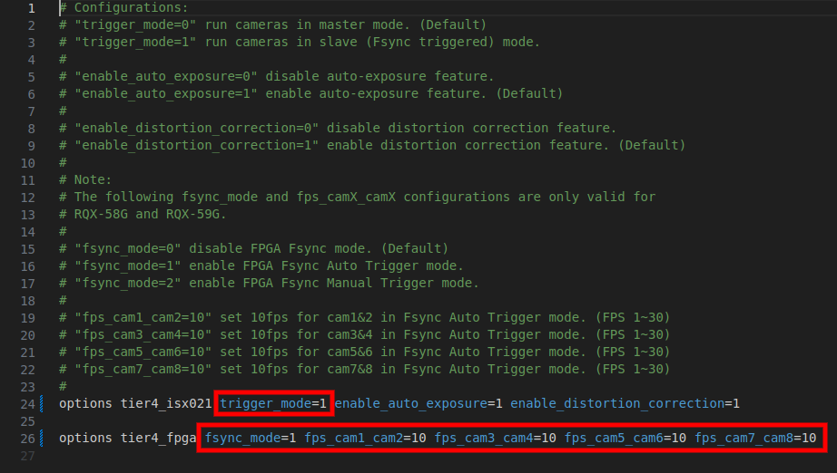
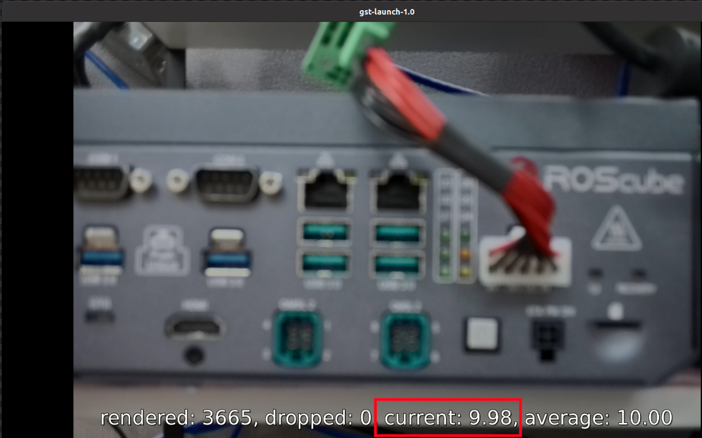

Frame Synchronization¶
The ROScube-X compatible GMSL2 cameras can be run in the following modes:
Free Run mode - The camera runs at default FPS.
Fsync Auto Trigger mode - The camera shutter is automatically triggered by FPGA.
Fsync Manual Trigger mode - The camera shutter is manually triggered by Fsync signal.
Typically, if you want to use Fsync mode, you need to follow the procedure.
Set all cameras to Fsync mode by kernel modules’s parameter.
Set FPGA parameter for automatically triggering. Or use I/O library to manually trigger frames.
Use GStreamer or Argus API to retrive your frame.
Why Frame Synchronization?¶


FPGA Firmware Version and Upgrade¶
In order to use Fsync mode, please make sure that FPGA version is at least 0x24.
i2cget -f -y 2 0x66 0x01

If the version value is unable to read, you have to flash the FPGA firmware.
For RQX-590 with ADLINK GMSL board, please go to https://github.com/Adlink-ROS/rqx-release-sw to download the flash tool and the latest firmware.
For RQX-58G and RQX-590 with Leopard GMSL board, you have to send RQX back to ADLINK to upgrade the firmware.
Tier IV C1/C2 Frame Sync¶
If you are using Tier IV Automotive HDR Camera C1/C2. To enable Fsync mode, please use a text editor to open the driver configuration file:
/etc/modprobe.d/tier4-isx021.conffor C1 camera/etc/modprobe.d/tier4-imx490.conffor C2 camera
And then follow the steps to enable Fsync mode:
Set
trigger_mode=1.Set
fsync_mode=1for Fsync Auto Trigger mode orfsync_mode=2for Fsync Manual Trigger mode.Set
fps_camX_camX=<FPS>for Fsync Auto Trigger rate.Save file and reboot system to take effect.
Here is C1 camera example for using Fsync Auto Trigger mode with 10 Hz tigger rate:
{kind=link}
After reboot, enter GStreamer command on terminal to verify the trigger rate (FPS):
gst-launch-1.0 -e v4l2src device=/dev/video0 ! 'video/x-raw,format=UYVY,width=1920,height=1280' ! videoconvert ! fpsdisplaysink video-sink=xvimagesink sync=false
In this example, the streaming result will be around 10 Hz:
{kind=link}
If you want to use Fsync Manual Trigger Mode, please go to the section.
Leopard AR0233 Frame Sync¶
For Leopard AR0233 users, to enable Fsync mode, please change the value from /sys/module/leopard_ar0233/paramters/trigger_mode:
0 -> Free Run mode
1 -> Fsync mode
To see current value of trigger_mode, please enter the following commands:
sudo su
cat /sys/module/leopard_ar0233/parameters/trigger_mode
Note
Value 0 means all AR0233 cameras are in free run mode, while value 1 means AR0233 cameras are in frame sync mode.
Fsync Auto Trigger mode:
To enable Fsync Auto Trigger mode, please enter the following commands:
sudo su # For Fsync Auto Trigger mode echo 1 > /sys/module/leopard_ar0233/parameters/trigger_mode i2cset -f -y 2 0x66 0x04 0xff i2cset -f -y 2 0x66 0x05 0xf0 # Set to 10 Hz (0x0a) for 8 cameras i2cset -y -f 2 0x66 0x08 0x0a i2cset -y -f 2 0x66 0x14 0x0a i2cset -y -f 2 0x66 0x20 0x0a i2cset -y -f 2 0x66 0x2c 0x0a # (trigger rate can be set from 0x01 to 0x30)
Fsync Manual Trigger mode:
To enable Fsync Manual Trigger Mode, please enter the following commands:
# For Fsync Manual Trigger mode sudo su echo 1 > /sys/module/leopard_ar0233/parameters/trigger_mode i2cset -f -y 2 0x66 0x04 0xff i2cset -f -y 2 0x66 0x05 0x00
To learn how to manually trigger the camera shutters, please go to the section.Free Run mode:
To disable Fsync mode and enable Free Run mode, please enter the following commands:
# For Free Run mode sudo su echo 0 > /sys/module/leopard_ar0233/parameters/trigger_mode i2cset -f -y 2 0x66 0x04 0xf0 i2cset -f -y 2 0x66 0x05 0x00
Manual Trigger by Application¶
How to manually trigger the camera shutters when using Fsync Manual Trigger mode?
In ROScube-X Series, we use 4 GPIOs to send Fsync signals to trigger 8 camera shutters. Once you know which GPIOs can be used, you can write a program by setting high/low to the GPIOs to send Fsync signals.
The 4 GPIOs used to send Fsync signal are listed below:
For RQX-590 Series:
Camera Number |
Sysfs Pin Number |
Pin Name |
|---|---|---|
cam 1 - cam 2 |
/sys/class/gpio/gpio440 |
PP.00 |
cam 3 - cam 4 |
/sys/class/gpio/gpio397 |
PH.06 |
cam 5 - cam 6 |
/sys/class/gpio/gpio487 |
PAC.01 |
cam 7 - cam 8 |
/sys/class/gpio/gpio486 |
PAC.00 |
For RQX-58G:
Camera Number |
Sysfs Pin Number |
Pin Name |
|---|---|---|
cam 1 - cam 2 |
/sys/class/gpio/gpio408 |
|
cam 3 - cam 4 |
/sys/class/gpio/gpio350 |
|
cam 5 - cam 6 |
/sys/class/gpio/gpio446 |
|
cam 7 - cam 8 |
/sys/class/gpio/gpio445 |
The sample codes can be downloaded from this link: https://github.com/Adlink-ROS/fsync_manual_trigger Before using this program, please make sure the cameras are switched to Fsync Manual Trigger mode.
Note
In Fsync Manual Trigger mode, the performance and the precision depends on the program as well as the system load. Fsync Auto Trigger mode is much more precise than manual trigger mode.
Note
You should trigger the frame first before running camera streaming.